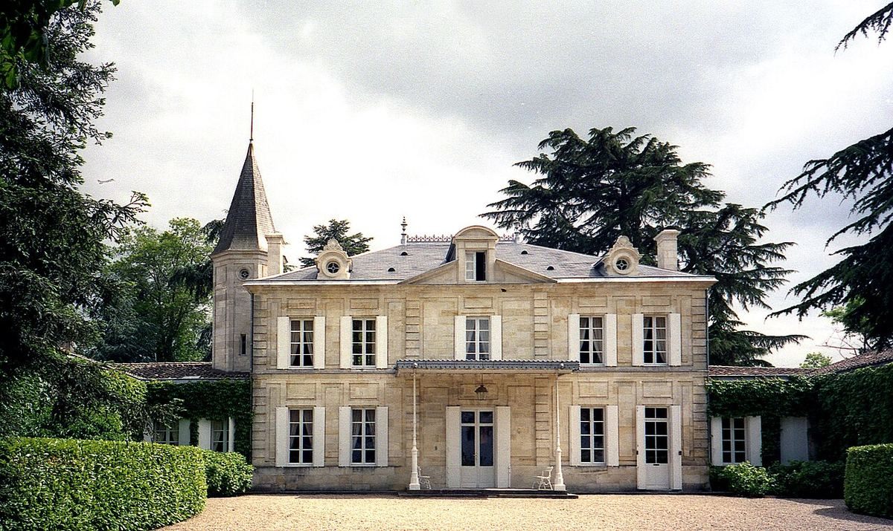

ROSSO
Grande tenuta di Saint-Émilion, al confine con Pomerol, celebre per l’elevata quota di Cabernet Franc nel suo vino.

Château Cheval Blanc si trova all’estremità nord-occidentale della denominazione Saint-Émilion, al confine con Pomerol. La tenuta fu costituita nell’Ottocento dalla famiglia Fourcaud-Laussac, che la conservò per oltre un secolo. Nel 1998 fu acquistata da Bernard Arnault e dall’imprenditore belga Albert Frère.
I suoi suoli uniscono ghiaie e argille, cosa poco comune a Saint-Émilion e più vicina a Pomerol. Il tratto più distintivo di Cheval Blanc è il peso del Cabernet Franc, che in molte annate supera la metà dell’assemblaggio, completato dal Merlot. Nel 2011 è stata inaugurata una cantina progettata dall’architetto Christian de Portzamparc.
Per decenni è stato uno dei Premiers Grands Crus Classés «A» di Saint-Émilion, insieme a Château Ausone. Nel 2021 la tenuta ha deciso di non candidarsi alla revisione della classificazione, e da allora i suoi vini sono commercializzati senza tale menzione.
Oltre al grand vin, la tenuta produce il secondo vino Le Petit Cheval. Lo stile di Cheval Blanc unisce ricchezza di frutto, freschezza e finezza aromatica, con un grande potenziale di invecchiamento.
I suoi proprietari partecipano anche a progetti fuori da Bordeaux, come Cheval des Andes in Argentina.